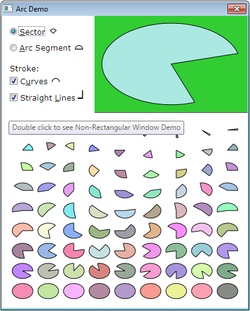
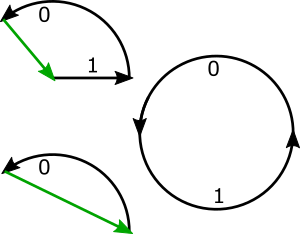
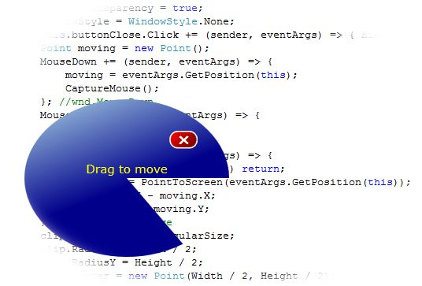
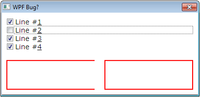

Epigraph:
Without stones there is no arch
- Marco Polo
Contents
Is it Really a Problem?
First of all, the mere fact that there is no such Geometry type looks quite weird. Sectors and segments always were must-haves in all kinds of vector graphics. And, as we can see, adding such types is simply an unsolvable problem.
But let’s consider something simpler first: is it possible to create an arc sector or segment primitive and place it on the form? Yes, of course, but how? It turned out surprisingly difficult. Of course, I could have taken it for my own dullness, if… I could find a solution working for all cases. Many answered the question on how to draw an arc from some starting to some ending angle, but… I wonder, was it so difficult to test such “solution” to have both angles in each quadrant and quadrant boundaries in all possible combinations? The problem looks quite simple but no, I did not find anything completely working.
The only thing dealing with a part of an ellipse/circle is System.Windows.Media.ArcSegment; and its API looks quite confusing, to say the least. Well, it’s always possible to find out how it works, but it’s more important that this PathSegment type cannot show 360° ellipse anyway. It could be combined with EllipseGeomentry, but… not so fast.
Much more fundamental problem is the lack of the possibility to create custom Geometry. According to official Microsoft documentation on System.Windows.Media.Geometry, “Although this class is abstract, it is not publicly extensible”. All classes derived from Geometry are sealed, so we still cannot create a derived class indirectly. It makes certain things impossible. For example, there is no a way to place arc-related geometry in XAML where the Geometry type is expected, which is important for the UIElement.Clip and some other applications. End of story.
After all, I implemented those functionally equivalent features using Geometry, like clipping and animation, but not in the same way the class Geometry was designed for; and it partly defeats the purpose of this fundamentally important class, unfortunately.
It would be possible to make something functionally equivalent, for example, with custom System.Windows.Media.PathSegment, but the same story goes here: this class is also not publicly extensible.
I feels like Microsoft is doing pretty good job intended to block development in this direction. Wow!
The Solution
First idea it to create a class EllipticalArcGeometry factory method, instead of real Geometry. The use of implicit type cast operator can make the use of it quite easy; the instance of the type can be use in most cases where Geometry instance can be used:
public partial class EllipticalArcGeometry {
public static implicit operator Geometry(EllipticalArcGeometry instance) {
return instance.geometry;
}
}
On top of that, it needs a set of dependency properties, to interact smoothly with other WPF components. First of all, this is AngularSize, starting Angle of a sector/segment/arc, followed by the properties fully analogous of those EllipseGeomentry properties, plus specific rendering options. This is a usual boring work. Oh, and yes, the direction of measuring the angle is chosen according to “mathematical” convention: counterclockwise. If someone needs the Microsoft’s way, it’s easy to add 360°−Angle expression or choose proper Transform and apply it to Geometry.Transform property.
To render sector and segment geometries for all cases, it’s enough to implement three distinct cases of the path. Each case can be built as a separate PathFigure instance, so we needs only one child at a time in the property PathGeometry.Figures. As property values change, we can quickly replace the instance of the PathFigure. Here are those three cases. Each case needs one or two segment in each PathFigure instance:

The segment indices are shown by the numbers 0 or 1. The straight line segment shown in green does not have to be a separate LineSegment; instead, stroking of this line is controlled by the property PathFigure.IsClosed — the contour simply gets back to the starting point of the path. The stroking of the arc segments and the straight line segment #1 used for the sector case is controlled by the property PathSegment.IsStroked.
Two cases on left represent sector and segment geometries, and the case on right is the common for them and is used only for the special case of the full 360° ellipse.
This way, the code of the EllipticalArcGeometry looks like this:
void setSegments() {
if (Variant != EllipticalArcGeometryVariant.Sector)
geometry.Figures[0] = segmentFigure;
else
geometry.Figures[0] = sectorFigure;
double angleTo = AngularSize;
bool fullEllipse = AngularSize >= Arcs.DefinitionSet.MaxAngle;
if (fullEllipse)
angleTo = Arcs.DefinitionSet.MaxAngle / 2;
Point first = new Point(Center.X + RadiusX, Center.Y);
Point second = new Point(Center.X + RadiusX * cos(angleTo), Center.Y - RadiusX * sin(angleTo));
sectorFigure.StartPoint = Center;
line.Point = first;
arcSegment.Point = second;
arcSegment.IsLargeArc = AngularSize > Arcs.DefinitionSet.MaxAngle / 2;
if (Variant != EllipticalArcGeometryVariant.Sector)
segmentFigure.StartPoint = first;
if (fullEllipse) {
ellipseFigure.StartPoint = first;
augmentingArcSegment.Size = arcSegment.Size;
augmentingArcSegment.Point = first;
geometry.Figures[0] = ellipseFigure;
}
}
This entire exercise is done on a round shape and for the Angle value of 0. Other angles and different ellipse aspect ratio are obtained by two Transform operations: rotation followed by scale.
Having all that, the class EllipticalArcShape is quite trivially implemented based on EllipticalArcGeometry, without any need to deal with paths again. Please see the source code.
If it Looks Like Geometry, Swims Like Geometry…
…no, it is not a duck, and it does not even have to be Geometry. EllipticalArcGeometry just can be used where Geometry can be used; well, almost everywhere; this is the whole point of having this class.
For example, as with real Geometry types, it can be used to create a non-rectangular control, including Window. The picture at the top shows a ToolTip “Double click to see Non-Rectangular Window Demo”. Indeed, let’s click on it and see how it looks on the background of its own source code:

Sorry for somewhat predatory look of this picture. 😃
Note that this is not just transparency; it is a real window shape seen on the UIElement behavior. If you click it the area of the transparent elliptical-arc area in the bottom-right corner of the window, it will be deactivated to activate the window of some other application, such as Visual Studio. It you click in the opaque blue area, you can drag the window, close it, and so on.
Apparently, same thing can be done with any UIElement, as it is achieved by assigning some Geometry instance to the property System.Windows.UIElement.Clip.
Likewise, the Geometry instance coming from the EllipticalArcGeometry factory, can be used in other techniques, for example, in WPF Graphics Rendering through GeometryDrawing or rendered via DrawingContext by using the method DrawingContext.DrawGeometry.
Those who really ran the demo showing the non-rectangular window could see that the window is also animated; and the subject of this animation is the same very window clip: not only the window shape is not rectangular, but this shape is also changing with time. Is it a problem or not? It would not be a problem if EllipticalArcGeometry was actually a Geometry class, of if standard WPF animation was not used.
How can it be Animatable?
Coming back to the design of EllipticalArcGeometry, which works through a factory method providing access to some Geometry instance, but is not itself a Geometry. Would it be enough in all cases? Apparently not. There is always a way to see that some class is not derived from some other class, such as Geometry. For example, the method BeginAnimation accepts some dependency property as a first parameter, but properties of EllipticalArcGeometry are not the properties of its Geometry, so animation would not work. How to resolve this problem?
The main demo shows the animation on the class EllipticalArcShape, which is not a problem at all, because it derives from Shape, already Animatable. But we cannot do the same with Geometry. Pretty obviously, the problem can be solved if we derive from the Geometry base class, which is Animatable. Fortunately, in contrast to Geometry or PathSegment, this class is publicly extensible; and only one method is required to be overridden in a derived class. So, the solution is quite simple:
public partial class EllipticalArcGeometry : Animation.Animatable {
protected override Freezable CreateInstanceCore() {
return this;
}
}
That’s all. After it is done, animation immediately starts to work:
public partial class NonRectangularDemo : Window {
protected override void OnContentRendered(System.EventArgs e) {
DoubleAnimation animation = new DoubleAnimation();
clip.BeginAnimation(EllipticalArcGeometry.AngularSizeProperty, animation);
}
}
Why not CombinedGeometry?
In principle, System.Windows.Media.CombinedGeometry could be used to combine the System.Windows.Media.PathGeometry used for the sector and segment cases with simple System.Windows.Media.EllipseGeometry used for the special case of 360°. This probably would be the simplest solution. However, with this approach, the control over the stroking of parts of the paths via the properties PathSegment.IsStroked and PathFigure.IsClosed would be completely lost.
It may sound weird, but look at the test application included in the source code:

The behavior was tested on .NET versions from 3.5 to 4.6.1.
The path on left (red) is built using a stand-along PathGeometry instance; and the path on right is the member geometry of the instance of CombinedGeometry. The second member of the combination pair is actually null. Nevertheless, it breaks the separate-stroking feature PathGeometry, which can be seen on the test.
We can guess why it happens. Microsoft could consider separate stroking as a complication and gave it up entirely for the combined geometry. Indeed, as a result of combination, some path segments or their parts becomes invisible, so it changes the original meaning of “stroking”. But I would ask: so what? Each visible part of the path still can be stroked or not, being controlled in exact same way. It’s even less clear why the feature is broken even if the other member of the combination is null. I have only one word for this: defect.
Compatibility and Build
As the code is based on WPF, I used the first platform version decently compatible with WPF — Microsoft.NET v.3.5. Correspondingly, I provided a solution and a project for Visual Studio 2008. I’ve done it intentionally, to cover all the readers who could use WPF. Later .NET versions will be supported; later versions of Visual Studio can automatically upgrade solution and project files. Anyway, the code was tested on .NET versions from 3.5 to 4.6.1.
In fact, Visual Studio is not required for the build. The code can be built as batch, by using the provided batch file “build.bat”. If your Windows installation directory is different from the default, the build will still work. If .NET installation directory is different from default one, please see the content of this batch file and the comment in its first line — next line can be modified to get the build.
Conclusions
I believe everything what could be done in this situation is done. Even though it is impossible to create required type of Geometry, my approach offers all equivalent run-time (functional) features. The difference in the development techniques does not make development more difficult, less maintainable, annoying or tedious. It’s just a bit different and requires some minimal understanding. I hope I explained everything.
I would be much grateful if someone suggests some improvements of offer some informative criticism and perhaps some better ideas. I’ll also gladly answer any questions.